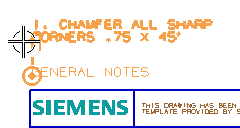

在向上的方向创建三个注释(从标题开始)
-
在注释工具条上，点击注释
 。
。当您放置每一行文本时，您想要看见每个注释适合标题块上方的空间时必须是多长。
您可以通过更改注释在光标上的对齐方法来做到。
-
在原点组中的对齐下方，点击锚点列表以将它展开。
有九种不同的对齐选项可以使用。
对于这个练习，您想让文本显示在光标的右上方。
选项旁的图形符号会有助您理解文本上锚点的位置。
-
在锚点列表中，选择左下。
-
调整图形窗口以便溺可以看见图纸中标题块上方的区域。
文本输入框显示的您上一次输入的文本。
记住，如果文本输入框中的文本全部高亮显示，您就可以不用删除文它，只要直接输入，系统将自动把高亮文本替换。
-
确保文本输入框中的文本全部高亮显示。
-
键入常规注释。
常规注释需要一个标题。
所以高亮显示的文本都被新字符替换。
当您在图形窗口中移动放置图样时，注意光标位于文本的左侧，并与文本底部对齐。
提示
如果您不想让注释与任何文本或图纸视图关联，记住在移动时按住 Alt 键。
-
单击以在标题块左边拐角的上方放置文本。
当您完成这个注释时，您想让它们作为一个单元移动。
将它与现有注释关联，就可以了。
-
在对齐下方的自动对齐列表中，确保选择的是关联。
在您将要创建的注释中，将在文本末端使用一个角度符号。
如果文常规注释仍然高亮显示，您就可以直接开始输入新注释。
-
在这个注释的第一行键入：
1. 对所有锐边倒斜角。 -
回车以创建文本的第二行。
-
键入 斜角 .75 X 45。
-
在符号下方，确保在类别列表中选择的是制图，然后选择角度 。
-
使用辅助线以将注释与文本常规注释对齐，然后单击以放置注释。

注释已生成，并且字符仍然在光标上。